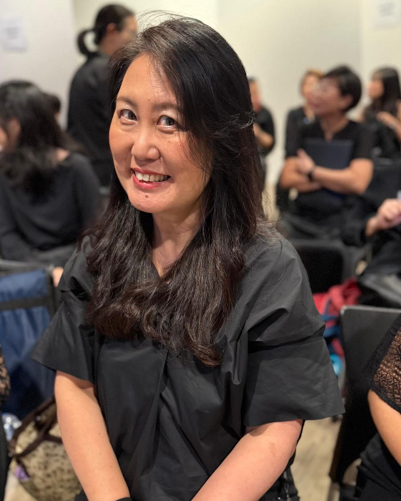

About Mona
Educator and performer.
- Teaching
- Piano and English
- Performing
- Piano, keyboard and accompaniment
- Opera
- Most recently The Rake's Progress with New Opera Singapore
- Directing and choreography
- Including a Nativity concert for K1 and K2 children

Biography
Mona Lim is an educator who teaches piano and English.
She also performs on piano and keyboard and accompanies other musicians. Her most recent opera was Stravinsky's The Rake's Progress with New Opera Singapore.
Mona directs and choreographs as well. She helped direct a Nativity concert for K1 and K2 children, and played keyboard for it.